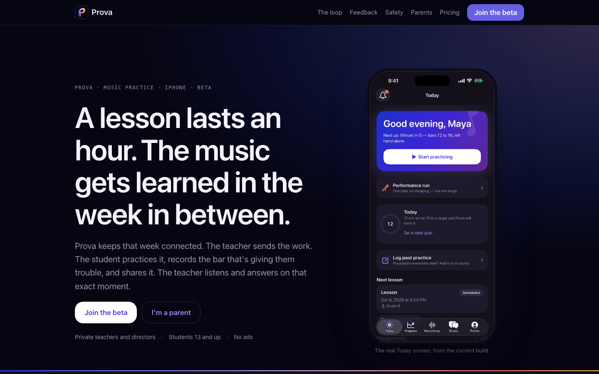
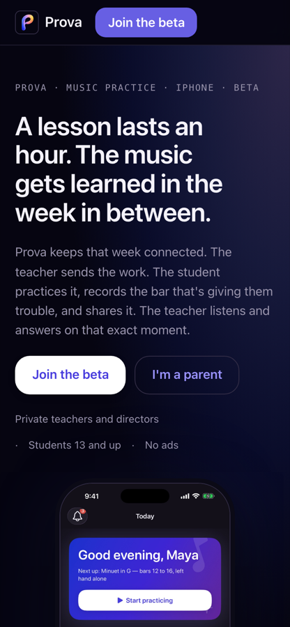
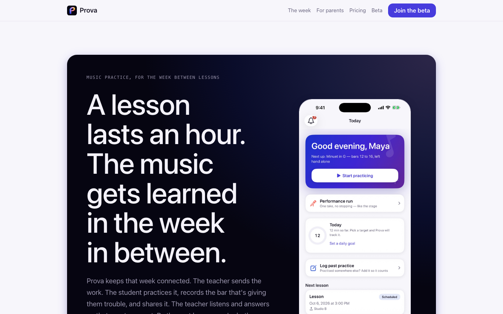
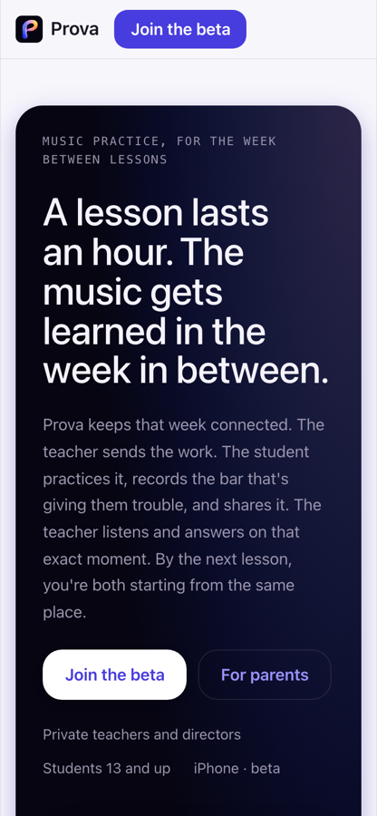
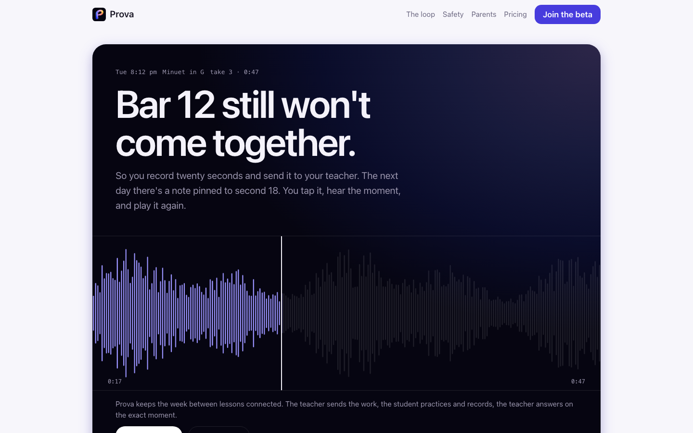
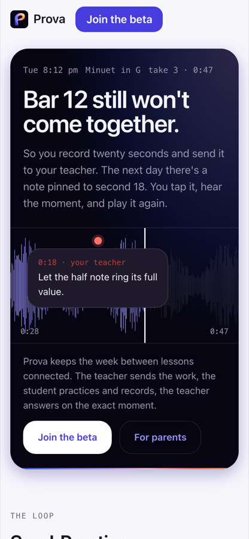

<title>Prova Site Direction</title>
<link rel="stylesheet" href="shared/tokens.css">
<style>
/* The review page for the founder's pick: one reading column, figures break out to the container width.
   Built on the same token sheet as the prototypes. */
:root { --measure: 72ch; }
h1 { font-size: var(--text-display); }
h2 { font-size: var(--text-title); margin-top: var(--sp-xxxl); padding-top: var(--sp-xl); border-top: var(--border-hairline) solid var(--border); }
h3 { font-size: var(--text-title3); margin-top: var(--sp-xl); }
h4 { font-size: var(--text-headline); margin-top: var(--sp-lg); }
main { max-width: var(--container-max); margin: 0 auto; padding: var(--sp-xl) var(--page-margin) 80px; display: grid; gap: var(--sp-md); }
.prose { max-width: var(--measure); }
p, li { line-height: var(--leading-prose); }
ul, ol { margin: 0; padding-left: 1.2rem; display: grid; gap: var(--sp-xs); }
.meta { color: var(--text-secondary); font-size: var(--text-subhead); }
.stage.head { padding: clamp(24px, 5vw, 48px); display: grid; gap: var(--sp-md); margin-bottom: var(--sp-lg); }
.stage.head h1 { color: var(--text); }
.stage.head p { max-width: 64ch; }
.asks { display: grid; grid-template-columns: repeat(auto-fit, minmax(min(100%, 280px), 1fr)); gap: var(--sp-md); margin-top: var(--sp-sm); }
.asks .box { background: var(--surface); border: var(--border-hairline) solid var(--border); border-radius: var(--r-md); padding: var(--sp-lg); min-width: 0; }
.asks h3 { margin: 0 0 var(--sp-sm); font-size: var(--text-headline); }
.asks ol { padding-left: 1.1rem; }
.tablewrap { overflow-x: auto; border: var(--border-hairline) solid var(--border); border-radius: var(--r-md); background: var(--surface); margin-block: var(--sp-sm); }
table { border-collapse: collapse; width: 100%; font-size: var(--text-subhead); }
th, td { text-align: left; vertical-align: top; padding: 9px 12px; border-bottom: var(--border-hairline) solid var(--border); min-width: 9em; }
th { font-size: var(--text-caption); text-transform: uppercase; letter-spacing: 0.04em; color: var(--text-secondary); font-weight: var(--weight-semibold); }
tr:last-child td { border-bottom: 0; }
td.num { font-family: var(--font-mono); font-variant-numeric: tabular-nums; white-space: nowrap; font-size: var(--text-footnote); }
.good { color: var(--success-text); } .bad { color: var(--error); }
.dirs { display: grid; gap: var(--sp-xl); }
.dir { display: grid; grid-template-columns: minmax(0, 1fr) minmax(0, 1fr); gap: var(--sp-xl); align-items: start; padding: var(--sp-xl); border-radius: var(--r-xl); background: var(--surface); border: var(--border-hairline) solid var(--border); }
.dir.pick { border-color: var(--primary); box-shadow: var(--glow-primary); }
.dir .copy { display: grid; gap: var(--sp-md); min-width: 0; }
.dir .copy h3 { margin: 0; }
.dir .tag { display: inline-flex; gap: 8px; align-items: center; }
.dir figure { margin: 0; display: grid; grid-template-columns: minmax(0, 2.2fr) minmax(0, 1fr); gap: var(--sp-sm); align-items: start; min-width: 0; }
.dir img { width: 100%; height: auto; border-radius: var(--r-sm); border: var(--border-hairline) solid var(--border); }
.dir figcaption { grid-column: 1 / -1; font-size: var(--text-footnote); color: var(--text-secondary); }
.dir .ctas { display: flex; flex-wrap: wrap; gap: var(--sp-sm); }
.dir dl { display: grid; grid-template-columns: auto 1fr; gap: 4px 12px; margin: 0; font-size: var(--text-subhead); }
.dir dt { color: var(--text-secondary); } .dir dd { margin: 0; }
@media (max-width: 860px) { .dir { grid-template-columns: 1fr; } }
.note { border-left: 4px solid var(--primary); background: var(--surface); border-radius: var(--r-sm); padding: var(--sp-md) var(--sp-lg); }
.beats { display: grid; gap: var(--sp-sm); counter-reset: beat; }
.beat { display: grid; grid-template-columns: 36px 1fr; gap: var(--sp-md); padding: var(--sp-md) var(--sp-lg); background: var(--surface); border: var(--border-hairline) solid var(--border); border-radius: var(--r-md); }
.beat::before { counter-increment: beat; content: counter(beat); font-family: var(--font-mono); color: var(--primary); font-weight: var(--weight-medium); }
.beat b { display: block; }
.beat span { color: var(--text-secondary); font-size: var(--text-subhead); }
.band { height: 4px; width: 200px; background: var(--signature-gradient); border-radius: 2px; }
footer { color: var(--text-secondary); font-size: var(--text-footnote); margin-top: var(--sp-xxl); }
</style>

<main>
<header class="stage head">
  <span class="lockup"><span class="tile"></span><span class="word">Prova</span></span>
  <p class="eyebrow">Marketing site · Phase 1 · research and direction · 2026-10-07</p>
  <h1>Three front doors for Prova. Pick one.</h1>
  <p>What the competition does, what the best product sites do, the story the site should tell, three prototyped directions built on the app's approved tokens and brand system, the recordings they need, and what the site should run on. Everything here stops at your pick; nothing is published and nothing is spent.</p>
  <div class="note" style="background:rgba(255,255,255,.06);border-color:var(--primary)"><p><b>Update, 2026-10-13.</b> On your recorded default (B with C's take, the system type stack, provamusic.app) there is now a draft of the real page: <a href="https://claude.ai/artifact/Tb8rUtUfHUqh1tZPD2GCLg">Draft D, the week with the take</a>. It uses the approved brand exports from the app's <code>docs/brand/</code>. Two minutes on it is the pick; "otherwise" means say which of A, B or C instead.</p></div>
  <div class="asks">
    <div class="box"><h3>Your decisions</h3><ol><li>The direction: A, B or C (my recommendation is B, with C's take as its hero object).</li><li>Type: the system stack, as the brand system says, or one of the display faces (each prototype has a toggle in its footer).</li><li>The domain name and who buys it.</li><li>Pricing after the beta: the sentence is approved; the number comes later.</li></ol></div>
    <div class="box"><h3>Already settled</h3><ol><li>The copy is direction A of the launch materials, corrected against the code on 2026-10-06.</li><li>The two forward-looking lines (parent view, pricing) are approved as written.</li><li>The brand system is approved: night stage, aurora at 24%, signature line, the lockup, the Downbeat.</li><li>Nothing goes public: GitHub Pages stays off until the legal values are filled.</li></ol></div>
  </div>
</header>

<section class="prose">
<h2 id="teardown">1 · The competition</h2>
<p>Six sites, loaded live on 2026-10-06, read as a teacher deciding whether to bring a studio onto it and as a parent deciding whether to trust it with a child.</p>
</section>
<div class="tablewrap"><table>
<thead><tr><th>Site</th><th>Headline, verbatim</th><th>Speaks to</th><th>Who pays, how much</th><th>Proof</th><th>Product shown as</th><th>Child safety on the site</th><th>Read</th></tr></thead>
<tbody>
<tr><td><b>Better Practice</b></td><td>"THE MUSIC PRACTICE APP"</td><td>Teacher, then student, parent</td><td>Student or parent, $4.25/mo; teachers free; 21-day trial</td><td>"3x practice", "6M+ practices tracked", 33 testimonials</td><td>Flat icons, one GIF, device trio, photos of kids</td><td class="bad">None. The privacy page renders an empty template</td><td>Clear loop ("Assign, Track, Chat, Reward") and real parent quotes; 2015 Bootstrap, parent-pays friction, product never shown in the hero</td></tr>
<tr><td><b>Practice Space</b></td><td>"Music Lesson Platform."</td><td>Teacher</td><td>Teacher, $15.99/mo ($13.33 yearly); students never pay; 30-day trial</td><td>4 named-studio quotes; no numbers</td><td>Static dashboard screenshots</td><td>One clumsy line: "privacy policies that were build for kids"</td><td>Closest to our loop ("Practice Video Feed") but buried at section 7; gamification leads; the only competitor that even mentions kids' privacy</td></tr>
<tr><td><b>My Music Staff</b></td><td>"Helping you…" (rotating)</td><td>Studio owner</td><td>Teacher, $16.95/mo + $4.95 per extra teacher; 30-day trial, 90-day guarantee</td><td>Capterra 4.8 (760 reviews), NAMM award, "since 2013"</td><td>Device mockups, one video</td><td class="bad">None</td><td>Best trust stack in the category; no practice loop at all (admin software)</td></tr>
<tr><td><b>Andante</b></td><td>"The best music practice companion"</td><td>Self-directed musician</td><td>User, one-time $2.99–$24.99</td><td>6 App Store reviews; 4.9★ not shown</td><td>Clean phone and iPad mockups</td><td class="bad">None</td><td>The only one that looks current; a journal, with no teacher, feedback or parent</td></tr>
<tr><td><b>Tonestro</b></td><td>"Learn to play instruments with tonestro"</td><td>Adult hobbyist</td><td>Learner, $29.99–$197.99 subscriptions, hidden on the site</td><td>"12M downloads", 4.6★, 3 reviews</td><td>Photography; no UI at all</td><td class="bad">None; App Store says "Data used to track you"</td><td>Fastest page in the set (11 KB); its core feature is never shown; no teacher story</td></tr>
<tr><td><b>Musora</b></td><td>"Learn to play any instrument."</td><td>Adult learner</td><td>Learner, $30/mo in the hero; 7-day trial</td><td>4.8★, 120,495 students, 13 press logos, celebrities</td><td>4 autoplay videos, GSAP motion</td><td class="bad">None</td><td>Price transparency in the hero works; the model is "replace your teacher", the opposite of Prova</td></tr>
</tbody></table></div>
<section class="prose">
<h3>What the category gets wrong, so the site doesn't</h3>
<ul>
<li>Headlines that name the category ("THE MUSIC PRACTICE APP", "Music Lesson Platform.") instead of saying what changes for the reader.</li>
<li>A desktop-tablet-phone trio as the hero image; gamification (gems, avatars, leaderboards) as the lead benefit; "built by music teachers" with no teacher in sight; carousels of first-name quotes.</li>
<li>Prices hidden on a subpage everywhere except Musora. Teachers have to dig to learn who pays.</li>
<li>Five of six look like 2016 (Bootstrap 3, Squarespace, WordPress). Craft itself is an opening.</li>
</ul>
<h3>The openings nobody fills</h3>
<ul>
<li><b>Nobody shows the loop.</b> There is no hero in the category with a teacher's note pinned to a second of a student's take. Practice Space has a video feed and never demonstrates it.</li>
<li><b>Nobody speaks to the parent</b> in the first viewport, and no site has a "who can hear my child's recordings" explainer. Kids' privacy on a marketing page is an empty space.</li>
<li><b>Teacher pays, students and parents never do</b>, said in the hero. Better Practice's parent-pays model is a hidden friction a teacher feels when they try to roll it out.</li>
<li><b>Progress you can hear</b>: a before-and-after pair of takes, weeks apart, is the most convincing demo possible for a teacher and a parent, and no competitor can show one.</li>
</ul>
</section>

<section class="prose">
<h2 id="best">2 · What the best product sites do</h2>
</section>
<div class="tablewrap"><table>
<thead><tr><th>Site</th><th>The first viewport</th><th>Pacing</th><th>Motion</th><th>Steal</th><th>Don't copy</th></tr></thead>
<tbody>
<tr><td><b>Linear</b></td><td>Headline, two CTAs, a real-UI screenshot filling the lower half</td><td>9 sections, one claim and one UI crop each; proof late</td><td>Staggered fade-ups, two short clips, hover lift; one reduced-motion rule</td><td>One claim + one real screen per section</td><td>The engineering register; Prova needs warmth and faces</td></tr>
<tr><td><b>Stripe</b></td><td>Animated mesh gradient behind the headline; logo bar at scroll 1</td><td>15 dense sections</td><td>CSS scroll-driven animations with 23 reduced-motion rules, the most disciplined in the set</td><td>Proof directly under the hero; CSS-only scroll effects with fallbacks</td><td>The density. Prova needs 6–8 beats</td></tr>
<tr><td><b>Arc</b></td><td>A press quote as the H1; an autoplay muted product video right under it</td><td>5 sections</td><td>One video, otherwise still</td><td>A teacher's quote as the headline, a 20-second product clip under it</td><td>Tweets as proof</td></tr>
<tr><td><b>Things</b></td><td>Name, one sentence, "Watch the video"</td><td>7 quiet sections; a press and awards wall as the whole proof section</td><td>One video; calm</td><td>The intro video as the primary CTA, once we have footage</td><td>Thin storytelling; Things can rely on 15 years of brand</td></tr>
<tr><td><b>Flighty</b></td><td>Bold centred headline, real screens in frames, the Apple Design Award</td><td>12 sections as a journey: Preflight, At the airport, After landing</td><td>7 looping muted clips with posters, sticky sections (Framer)</td><td>The journey tabs (ours: Send, Practice, Answer); "free for your first flight" as "free for your first student"</td><td>12 sections and the testimonial wall</td></tr>
<tr><td><b>Headspace</b></td><td>Rotating phrase, "Try for $0", illustration first</td><td>10 sections; chips route the reader by need</td><td>Lottie characters; no scroll effects</td><td>One row of chips that routes a reader: teacher, student, parent</td><td>Two competing heroes, hidden prices</td></tr>
</tbody></table></div>
<section class="prose">
<p class="meta">Stacks seen in source: Linear, Stripe, Arc, Headspace on Next.js; Things hand-built static; Flighty on Framer; Tonestro on Astro 6; Musora custom with GSAP.</p>
</section>

<section class="prose">
<h2 id="story">3 · The scroll story</h2>
<p>One page, eight beats, in direction A of the launch materials ("The week between lessons"). Every beat shows at least one turn of the loop. The copy is the App Store copy, corrected against the code; the voice is the app's (short, encouraging, no guilt, no exclamation marks).</p>
</section>
<div class="beats">
  <div class="beat"><div><b>The hero.</b><span>"A lesson lasts an hour. The music gets learned in the week in between." The real Today screen. Two CTAs: Join the beta, For parents. The meta line says who it's for.</span></div></div>
  <div class="beat"><div><b>The pain, both sides.</b><span>"So, how did the week go?" The teacher's first ten minutes; the student's Tuesday night with bar 12.</span></div></div>
  <div class="beat"><div><b>The loop.</b><span>Send, Practice, Record, Answer. Four product moments: New assignment, score practice with the note in view, the recorder, the take review. Schematic now; recordings replace them.</span></div></div>
  <div class="beat"><div><b>Feedback on the recording.</b><span>The take with the teacher's notes pinned at 0:18 and 0:41, the quick responses, the rating scale. This is the beat no competitor has.</span></div></div>
  <div class="beat"><div><b>The teacher's week.</b><span>"Walk in knowing the week": Since last lesson, This Week with whoever has the most waiting first.</span></div></div>
  <div class="beat"><div><b>Kids' safety and privacy.</b><span>13+ in the beta, private by default, sharing means the teacher, no ads, no third-party analytics, one code and the teacher approves, report and block, delete everything. The under-13 path phrased as the plan it is.</span></div></div>
  <div class="beat"><div><b>For parents.</b><span>What Prova knows and who sees it, in plain words; the questions parents ask; the approved parent-view line.</span></div></div>
  <div class="beat"><div><b>Pricing and the beta.</b><span>"Free during the beta. When pricing arrives, teachers pay; students and parents never do." Then the TestFlight route for teachers and the class code for students.</span></div></div>
</div>

<section class="prose">
<h2 id="directions">4 · Three directions</h2>
<p>All three tell the same story with the same corrected copy, on the same token sheet mapped from the app (<code>TOKENS.md</code> on the branch), with the approved night stage as the home header, the lockup in the nav, Reduce Motion as a cross-fade, and both themes designed. What differs is the ground, the typography, the way the product appears and the one motion idea. Each prototype's footer has a "Type" toggle: the system rounded stack is the default, as the brand system says; the display face is the direction's exploration.</p>
</section>
<div class="dirs">
  <div class="dir">
    <div class="copy">
      <p class="eyebrow">Direction A</p>
      <h3>Night ground</h3>
      <p>The icon's night is the whole page, lit by the aurora. The Downbeat opens the page: the "p" drops from the centre into the nav's lockup on the app's own spring, once per session, replayable from the mark. One phone stays pinned while the four loop steps scroll past it and its screen swaps. The take's playhead follows your scroll.</p>
      <dl><dt>Feel</dt><dd>Linear and Arc: craft as credibility, the brand at full strength</dd><dt>Risk</dt><dd>A dark page reads as a developer tool to some parents, and it turns the whole site into a brand moment where the app keeps night for headers only</dd><dt>Type</dt><dd>System; Geist as the toggle</dd></dl>
      <div class="ctas"><a class="btn primary small" href="https://claude.ai/artifact/1YwDy3XLsHxPcZpkStuMis">Open Direction A</a></div>
    </div>
    <figure><figcaption>Desktop 1440 and phone 390. A pins the dark values in both themes on purpose.</figcaption></figure>
  </div>
  <div class="dir pick">
    <div class="copy">
      <p class="eyebrow">Direction B · recommended</p>
      <h3>The week</h3>
      <p>Lavender-white canvas, the night stage as the header with the real Today screen on it, and then the week itself: Saturday to Saturday, a line that fills as you read, each day a beat with a note-like card built from the app's tokens. Safety is a letter to parents. Nothing is pinned, nothing loops.</p>
      <dl><dt>Feel</dt><dd>Things and Headspace: calm, editorial, trustworthy; exactly the brand system's canvas-plus-stage rhythm</dd><dt>Risk</dt><dd>The quietest of the three; its motion is a line and a settle, so the recordings have to carry the excitement</dd><dt>Type</dt><dd>System; Fraunces as the toggle</dd></dl>
      <div class="ctas"><a class="btn primary small" href="https://claude.ai/artifact/SFdEJkS2cXjWi6oMDENFcx">Open Direction B</a></div>
    </div>
    <figure><figcaption>Desktop 1440 and phone 390, light. Dark mode follows the app's dark tokens.</figcaption></figure>
  </div>
  <div class="dir">
    <div class="copy">
      <p class="eyebrow">Direction C</p>
      <h3>Bar 12</h3>
      <p>The take is the hero: "Bar 12 still won't come together" on the night stage, the waveform of a 47-second take under it, and the teacher's note lands on 0:18 as you scroll. The loop is four cards, the reward is one celebration card with the app's own overlay hierarchy and the pop spring, safety is a receipt of what Prova keeps and never does.</p>
      <dl><dt>Feel</dt><dd>Flighty: the domain's own object as the hero; the most vivid first viewport and the one the category lacks</dd><dt>Risk</dt><dd>Student-voiced headline; a teacher or parent has to scroll to find their side</dd><dt>Type</dt><dd>System; Bricolage Grotesque as the toggle</dd></dl>
      <div class="ctas"><a class="btn primary small" href="https://claude.ai/artifact/TpL15PqXJWZ2irGBL714KW">Open Direction C</a></div>
    </div>
    <figure><figcaption>Desktop 1440 and phone 390, light.</figcaption></figure>
  </div>
</div>
<section class="prose">
<div class="note">
<p><b>Recommendation: B, with C's hero object folded in.</b> B is the direction the approved brand system already describes (night stage on the canvas), it is the one a parent trusts on sight, and the week is a story every teacher recognises. Its weakness is a quiet first viewport, and C has the fix: put the take with the pinned note on B's stage, under the headline, as the first product moment. A's Downbeat on the lockup comes along at no cost. If you want the site to feel like the app's launch rather than its Today screen, pick A.</p>
</div>
<h3>What a Codex review should hold the build to</h3>
<ul>
<li>Every colour, size, radius and motion value resolves to <code>shared/tokens.css</code>; the raw <code>--brand-*</code> values never appear in a feature rule.</li>
<li>Text 4.5:1 in light, dark and on the stage; the aurora never above 24%; no words on bright gradient.</li>
<li>Reduce Motion: no movement, no loops, the meaning kept; every scroll-linked element has a resting state.</li>
<li>Phone width 390 with no horizontal scroll; keyboard focus visible; the four schematic screens labelled until recordings replace them.</li>
<li>Feature claims match the orchestrator's check of 2026-10-06; no feed date, no "beside", "YouTube link", "scan with the camera or a PDF from Files".</li>
</ul>
</section>

<section class="prose">
<h2 id="assets">5 · What the site needs from the app</h2>
<p>Eight clips and ten stills, captured from a real build or the existing DEBUG showcases at 6.9 inches, light and dark, with the demo data the App Store screenshots already use (Maya Rivera, Minuet in G, the notes at 0:18 and 0:41). The Release and QA lead captures them on the simulator lock after the current P0s; the full spec with naming and formats is <code>prototypes/ASSETS.md</code> on the branch.</p>
</section>
<div class="tablewrap"><table>
<thead><tr><th>Clip</th><th>What happens</th><th>Showcase</th><th>Where it goes</th></tr></thead>
<tbody>
<tr><td>The Downbeat</td><td>Tap the icon, iOS zoom, the "p" drops into Today; one Reduce Motion version</td><td>branch design/launch-handoff, on a device</td><td>A's hero (concept material until #54 merges)</td></tr>
<tr><td>New assignment</td><td>Steps, tempo 92, the YouTube link, the PDF; Select all; Send</td><td>seeded teacher</td><td>The loop, 1</td></tr>
<tr><td>Score practice</td><td>Score, docked strip at about 12:00, metronome 92, the note in view</td><td><code>score</code></td><td>The loop, 2</td></tr>
<tr><td>The recorder</td><td>Record about 20 s, stop, "Share with &lt;teacher&gt;?"</td><td>seeded student</td><td>The loop, 3</td></tr>
<tr><td>Take review</td><td>Play, stop at 0:18, pin the note, "So much better", tap the stamp</td><td><code>reviewsheet</code></td><td>The loop, 4; the feedback hero</td></tr>
<tr><td>This Week</td><td>4 takes to hear, Maya first; listen, respond, next</td><td><code>weekpage</code></td><td>The teacher's week</td></tr>
<tr><td>Since last lesson</td><td>5 of 7 days, time on two pieces, 1 new take, the last note</td><td><code>lessondetail</code></td><td>The teacher's week</td></tr>
<tr><td>Level up</td><td>"Level 5", Apprentice, confetti settling</td><td><code>celebrate</code></td><td>C's reward</td></tr>
</tbody></table></div>
<section class="prose">
<p class="meta">Stills, light and dark: Today, New assignment, Score practice, the recorder at 0:19, Take review, This Week, Since last lesson, Dashboard, Students, Profile. No photography, no stock, no illustration.</p>
</section>

<section class="prose">
<h2 id="stack">6 · What it should run on</h2>
</section>
<div class="tablewrap"><table>
<thead><tr><th>Option</th><th>Cost</th><th>Scroll motion and Reduce Motion</th><th>Verdict</th></tr></thead>
<tbody>
<tr><td><b>Static HTML in this repo on GitHub Pages</b></td><td class="num good">$0 (100 GB/mo soft cap)</td><td>We write it: CSS scroll-driven animation plus <code>prefers-reduced-motion</code>, under our control</td><td class="good">Recommended. The legal pages already live here; one repo, one build, the founder's approval gate stays as it is</td></tr>
<tr><td>Cloudflare Pages</td><td class="num good">$0, unmetered bandwidth, commercial use allowed</td><td>Same</td><td>Swap in if video traffic ever strains Pages; a one-afternoon move</td></tr>
<tr><td>Astro</td><td class="num good">$0 (a build step)</td><td>Same</td><td>Adopt only when the site grows pages (help, blog); not needed for one page</td></tr>
<tr><td>Framer Basic</td><td class="num">$10/mo, custom domain</td><td>Built-in scroll transforms; reduced motion is a site setting (opacity still animates)</td><td>Only if you want to edit the site without code. Re-authors the Downbeat and the token sheet inside their tool</td></tr>
<tr><td>Webflow Basic</td><td class="num">$14/mo billed yearly</td><td>Interactions; reduced motion by hand</td><td>No advantage over Framer for this</td></tr>
<tr><td>Vercel Hobby / Netlify Free</td><td class="num">$0 but Vercel Hobby is non-commercial; Netlify pauses the site when credits run out</td><td>Same as static</td><td>Not for a company site</td></tr>
</tbody></table></div>
<section class="prose">
<p><b>Recommendation.</b> Stay static in this repo: hand-written HTML, CSS and a little JS on the shared token sheet, built by the existing <code>build.py</code> (the legal pages' build), served by GitHub Pages at zero cost, behind the same publish gate. Clips ship as MP4 and WebM with posters and <code>preload="none"</code>, well under 1.5 MB each. The only spend is a domain: about $12–15 a year for a .com, more for a .app; that is your purchase and your name choice. No Framer, no agency tooling, nothing monthly.</p>
<h3>What happens after your pick</h3>
<ol>
<li>The recordings are captured (ASSETS.md) once the P0s clear the simulator lock.</li>
<li>The chosen direction is built as the real site on the token sheet, with the clips in place of the schematic screens; Codex reviews visual quality, responsiveness, accessibility, motion, performance and feature accuracy against <code>TOKENS.md</code> and <code>HANDOFF.md</code>.</li>
<li>Builders start only after the app's TestFlight candidate is done; the site goes public with the legal pages, when the legal values are filled and you say so.</li>
</ol>
<span class="band" aria-hidden="true"></span>
</section>
<footer>Prototypes and sources on branch <code>site/directions</code> in <code>prova-site</code>, commit on the branch; not pushed. Competitor and reference facts gathered live on 2026-10-06. The brand mark, the Downbeat films and the sign-in and Today stills are from the launch studies and branch <code>design/launch-handoff</code>, which is not merged: concept material, not the shipped app.</footer>
</main>
